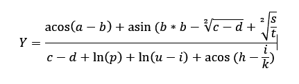

Ejercicio Aplicaciones Web
Nombre: STEFANIA BOTELLO MORALES - Código: 2016600

Procesar
Resultados:
Tipo de Error
Total
Porcentaje
Errores de Arcoseno
0
0%
Errores de Arcocoseno
0
0%
Errores de Raíz Cuadrada
0
0%
Errores de División
0
0%
Errores de Logaritmo Natural
0
0%